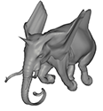
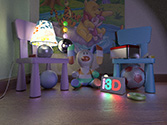
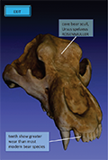
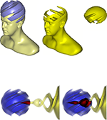

Andreas A. Vasilakis
Information Technologies Institute, Centre for Research & Technology Hellas (ITI-CERTH)
*No triangles were harmed during the implementation of my research work.


 abasilak
abasilak
Computer Graphics Scientist, PostDoc Researcher
Hi, my name is Andreas-Alexandros Vasilakis and I was born on October 12, 1983, in Corfu, Greece. I received my PhD on the field of Computer Graphics from the Department of Computer Science & Engineering of the University of Ioannina in Greece, under the supervision of Prof. Ioannis Fudos. My PhD studies were supported by a scholarship from the Heraclitus II grant through the operational programme "Education and Lifelong Learning" through the European Social Fund, 2010-2013. I have also received BSc and MSc Degrees from the same institution in 2006 and 2008, respectively.
After a successful two-year research collaboration with AUEB graphics group, I am pleased that I have joined the ITI/CERTH, where I am currently working on multifragment rendering, animation compression as well as augmented reality problems.Latest News
PROJECTS
- [12.12.16] - FRAILSAFE 2st plenary meeting @GENOA.
- [01.06.16] - FRAILSAFE 1st plenary meeting @CERTH.
- [19.01.16] - FRAILSAFE kick-off meeting @UOP.
- [18.11.15] - Participation @FRAILSAFE project as Postdoc Researcher.
Selected Projects
Feb 2016 - Present
FRAILSAFE: Sensing and predictive treatment of frailty and associated
co-morbidities using advanced personalized models and advanced interventions
Augmented Reality Serious Games Information Visualization VPM
EU-funded project under Horizon 2020 (grant no.690140)
Mar 2014 - Oct 2015
GLIDE: Goal-driven Lighting for Dynamic 3D Environments
Inverse Lighting Inverse Geometry Global Illumination Visibility Determination
HPG2016 I3D2016 TVCG2015 EG2015 I3D2015
ARISTEIA II programme: Research project co-funded by the General Secreteriat of Research and Technology and the European Union (grant no.3712).
Jun 2010 - Jan 2014
PhD Thesis: Direct Rendering of Feature-based Skinning Deformations
Segmentation Skinning CSG Compression Multifragment Rendering
CGF2014 I3D2014 TVCG2013 CAD2013 EG2012 CAVW2011 SCA2011 SIG2011
Irakleitos II Scholarship for research by the Greek Ministry of Education and the European Union.
Selected Publications
- DIRT: Deferred Image-based Ray Tracing
- Vardis, Vasilakis and Papaioannou, Proc. of HPG 2016.
- A Multiview and Multilayer Approach for Interactive Ray Tracing
- Vardis, Vasilakis and Papaioannou, Proc. of I3D 2016.
- PPS: Pose-to-Pose Skinning of Animated Meshes
- Vasilakis, Fudos and Antonopoulos, Proc. of CGI 2016.
- k+-buffer: Fragment Synchronized k-buffer
- Vasilakis and Fudos, Proc. of I3D 2014.
- *one of the 4 best paper awards
- Pose Partitioning for Multi-resolution Segmentation of Arbitrary Mesh Animations
- Vasilakis and Fudos, CGF (Proc. of Eurographics 2014).
- Depth-fighting Aware Methods for Multifragment Rendering
- Vasilakis and Fudos, IEEE TVCG 2013.
- *also presented at I3D 2013
Publications (complete list)
Journals/Book Chapters
A. A. Vasilakis G. Papaioannou I. Fudos
k+-buffer: An Efficient, Memory-Friendly and Dynamic k-buffer Framework
depth peeling k-buffer A-buffer pixel sync depth complexity histogram animation
TVCG, vol. 21, no. 6, pp. 688-700
Jun 2015


Depth-sorted fragment determination is fundamental for a host of image-based techniques which simulates complex rendering effects. It is also a challenging task in terms of time and space required when rasterizing scenes with high depth complexity. When low graphics memory requirements are of utmost importance, k-buffer can objectively be considered as the most preferred framework which advantageously ensures the correct depth order on a subset of all generated fragments. Although various alternatives have been introduced to partially or completely alleviate the noticeable quality artifacts produced by the initial k-buffer algorithm in the expense of memory increase or performance downgrade, appropriate tools to automatically and dynamically compute the most suitable value of k are still missing. To this end, we introduce k+-buffer, a fast framework that accurately simulates the behavior of k-buffer in a single rendering pass. Two memory-bounded data structures: (i) the max-array and (ii) the max-heap are developed on the GPU to concurrently maintain the k-foremost fragments per pixel by exploring pixel synchronization and fragment culling. Memory-friendly strategies are further introduced to dynamically (a) lessen the wasteful memory allocation of individual pixels with low depth complexity frequencies, (b) minimize the allocated size of k-buffer according to different application goals and hardware limitations via a straightforward depth histogram analysis and (c) manage local GPU cache with a fixed-memory depth-sorting mechanism. Finally, an extensive experimental evaluation is provided demonstrating the advantages of our work over all prior k-buffer variants in terms of memory usage, performance cost and image quality.
A. A. Vasilakis I. Fudos
Pose Partitioning for Multi-resolution Segmentation of Arbitrary Mesh Animations
multi-resolution variable global segmentation skinning animation
CGF (EG'14), vol. 33, no. 2, pp. 293-302
Strasbourg, France, April 2014

We present a complete approach to efficiently deriving a varying level-of-detail segmentation of arbitrary animated objects. An over-segmentation is built by combining sets of initial segments computed for each input pose, followed by a fast progressive simplification which aims at preserving rigid segments. The final segmentation result can be efficiently adjusted for cases where pose editing is performed or new poses are added at arbitrary positions in the mesh animation sequence. A smooth view of pose-to-pose segmentation transitions is offered by merging the partitioning of the current pose with that of the next pose. A perceptually friendly visualization scheme is also introduced for propagating segment colors between consecutive poses.We report on the efficiency and quality of our framework as compared to previous methods under a variety of skeletal and highly deformable mesh animations.
A. A. Vasilakis I. Fudos
Depth-fighting Aware Methods for Multifragment Rendering
A-buffer z-fighting depth peeling visibility ordering multi-fragment rendering
TVCG (I3D'13), vol. 19, no. 6, pp. 967-977
Orlando, FL, USA, Mar 2013

Many applications require operations on multiple fragments that result from ray casting at the same pixel location. To this end, several approaches have been introduced that process for each pixel one or more fragments per rendering pass, so as to produce a multifragment effect. However, multifragment rasterization is susceptible to flickering artifacts when two or more visible fragments of the scene have identical depth values. This phenomenon is called coplanarity or Z-fighting and incurs various unpleasant and unintuitive results when rendering complex multilayer scenes. In this work, we develop depth-fighting aware algorithms for reducing, eliminating and/or detecting related flaws in scenes suffering from duplicate geometry. We adapt previously presented single and multipass rendering methods, providing alternatives for both commodity and modern graphics hardware. We report on the efficiency and robustness of all these alternatives and provide comprehensive comparison results. Finally, visual results are offered illustrating the effectiveness of our variants for a number of applications where depth accuracy and order are of critical importance.
J. Rossignac I. Fudos A. A. Vasilakis
Direct Rendering of Boolean Combinations of Self-Trimmed Surfaces
classification rules trimming capping clipping CSG multi-fragment rendering animation
CAD (SPM'12), vol. 45, no. 2, pp. 288-300
Dijon, France, Oct 2012
We explore different semantics for the solid defined by a self-crossing surface (immersed sub-manifold). Specifically, we introduce rules for the interior/exterior classification of the connected components of the complement of a self-crossing surface produced through a continuous deformation process of an initial embedded manifold. We propose efficient GPU algorithms for rendering the boundary of the regularized union of the interior components, which is a subset of the initial surface and is called the trimmed boundary or simply the trim. This classification and rendering process is accomplished in realtime through a rasterization process without computing any self-intersection curve, and hence is suited to support animations of self-crossing surfaces. The solid bounded by the trim can be combined with other solids and with half-spaces using Boolean operations and hence may be capped (trimmed by a half-space) or used as a primitive in direct CSG rendering. Being able to render the trim in realtime makes it possible to adapt the tessellation of the trim in realtime by using view-dependent levels-of-details or adaptive subdivision.
A. A. Vasilakis I. Fudos
GPU rigid skinning based on a refined skeletonization method
skeletonization skinning re-meshing GPU character animation
CAVW, vol. 22, no. 1, pp. 27-46
Jan 2011

Many applications require operations on multiple fragments that result from ray casting at the same pixel location. To this end, several approaches have been introduced that process for each pixel one or more fragments per rendering pass, so as to produce a multifragment effect. However, multifragment rasterization is susceptible to flickering artifacts when two or more visible fragments of the scene have identical depth values. This phenomenon is called coplanarity or Z-fighting and incurs various unpleasant and unintuitive results when rendering complex multilayer scenes. In this work, we develop depth-fighting aware algorithms for reducing, eliminating and/or detecting related flaws in scenes suffering from duplicate geometry. We adapt previously presented single and multipass rendering methods, providing alternatives for both commodity and modern graphics hardware. We report on the efficiency and robustness of all these alternatives and provide comprehensive comparison results. Finally, visual results are offered illustrating the effectiveness of our variants for a number of applications where depth accuracy and order are of critical importance.
Conferences (Posters/Papers)
A. A. Vasilakis I. Fudos G. Antonopoulos
PPS: Pose-to-Pose Skinning of Animated Meshes
skinning compression editing character animation
CGI (Short), 2016, pp. 53-56
Heraklion, Crete, Greece, Jul 2016

In computer graphics, animation compression is essential for efficient storage, streaming and reproduction of animated meshes. Previous work has presented efficient techniques for compression using skinning transformations to derive the animated mesh from a reference pose. We present a pose-to-pose approach to skinning animated meshes by observing that only small deformation variations will normally occur between consecutive poses. The transformations are applied so that a new pose is derived by deforming the geometry of the previous pose, thus maintaining temporal coherence in the parameter space, reducing approximation error and facilitating forward propagated editing of arbitrary poses.
K. Vardis A. A. Vasilakis G. Papaioannou
DIRT : Deferred Image-based Ray Tracing
rasterization analytic ray tracing deferred rendering memory-aware
HPG, 2016, pp. 1-11
Dublin, Ireland, Jun 2016

We introduce a novel approach to image-space ray tracing ideally suited for the photorealistic synthesis of fully dynamic environments at interactive frame rates. Our method, designed entirely on the rasterization pipeline, alters the acceleration data structure construction from a per-fragment to a per-primitive basis in order to simultaneously support three important, generally conflicting in prior art, objectives: fast construction times, analytic intersection tests and reduced memory requirements. In every frame, our algorithm operates in two stages: A compact representation of the scene geometry is built based on primitive linked-lists, followed by a traversal step that decouples the ray-primitive intersection tests from the illumination calculations; a process inspired by deferred rendering and the path integral formulation of light transport. Efficient empty space skipping is achieved by exploiting several culling optimizations both in xy- and z-space, such as pixel frustum clipping, depth subdivision and lossless buffer down-scaling. An extensive experimental study is finally offered showing that our method advances the area of image-based ray tracing under the constraints posed by arbitrarily complex and animated scenarios.
K. Vardis A. A. Vasilakis G. Papaioannou
A Multiview and Multilayer Approach for Interactive Ray Tracing
A-buffer rasterization cubemap ray tracing path tracing ambient occlusion
I3D, 2016, pp. 171-178
Redmond, WA, USA, Feb 2016

We introduce a generic method for interactive ray tracing, able to support complex and dynamic environments, without the need for precomputations or the maintenance of additional spatial data structures. Our method, which relies entirely on the rasterization pipeline, stores fragment information for the entire scene on a multiview and multilayer structure and marches through depth layers to capture both near and distant information for illumination computations. Ray tracing is efficiently achieved by concurrently traversing a novel cube-mapped A-buffer variant in image space that exploits GPU-accelerated double linked lists, decoupled storage, uniform depth subdivision and empty space skipping on a per-fragment basis. We illustrate the effectiveness and quality of our approach on path tracing and ambient occlusion implementations in scenarios, where full scene coverage is of major importance. Finally, we report on the performance and memory usage of our pipeline and compare it against GPGPU ray tracing approaches.
A. A. Vasilakis G. Papaioannou
Improving k-buffer methods via Occupancy Maps
k-buffer occupancy maps culling multi-fragment rendering
EG (Short), 2015, pp. 69-72
Zurich, Switzerland, May 2015

In this work, we investigate an efficient approach to treat fragment racing when computing k-nearest fragments. Based on the observation that knowing the depth position of the k-th fragment we can optimally find the k-closest fragments, we introduce a novel fragment culling component by employing occupancy maps. Without any software redesign, the proposed scheme can easily be attached at any k-buffer pipeline to efficiently perform early-z culling. Finally, we report on the efficiency, memory space, and robustness of the upgraded k-buffer alternatives providing comprehensive comparison results.
A. A. Vasilakis G. Papaioannou
Αccelerating k+-buffer using Efficient Fragment Culling
k-buffer occupancy maps culling multifragment rendering
I3D (Posters), 2015, pp. 129-129
San Francisco, CA, USA, Feb-Mar 2015


In this work, we investigate an efficient approach to treat fragment racing when computing k-nearest fragments. Based on the observation that knowing the depth position of the k-th fragment we can optimally find the k-closest ones, we introduce a novel orderindependent fragment culling component, easily attached to the k+ buffer pipeline. An additional rendering pass of the scene’s geometry is initially employed to construct a per pixel binary fragment occupancy discretization. Then, the nearest depth of the k-th per pixel fragment is concurrently computed by performing bit counting operations and subsequently utilized to perform early-z rejection for the k+ buffer construction process that follows. Any fragment with depth larger than this value will fail the depth test, avoiding the cost of its pixel shading execution. Note that no software modifications are required to the actual k+ buffer implementation.
E. Eftaxopoulos A. A. Vasilakis I. Fudos
AR-TagBrowse: Annotating and Browsing 3D models on Mobile Devices
augmented reality annotation mobile
EG (Posters), 2014, pp. 1-1
Strasbourg, France, May 2014

We report on the development of a novel interactive augmented reality app called AR-TagBrowse, built on Unity 3D that enables users to tag and browse 3D objects. Users upload 3D objects (polygonal representation and diffuse maps) through a web server. 3D objects are then linked to real world information such as images and GPS location. Users may optionally segment the objects into areas of interest. Such objects will subsequently pop up in the AR-TagBrowse app when one of these events is detected (visible location or image). The user is then capable of interactively viewing the 3D object, browsing tags or entering new tags providing comments or information for specific parts of the object.
A. A. Vasilakis I. Fudos
k+-buffer: Fragment Synchronized k-buffer (*one of the 4 best paper awards)
k-buffer A-buffer pixel sync max-heap transparency multi-fragment rendering
I3D, 2014, pp. 143-150
San Francisco, CA, USA, Mar 2014

k-buffer facilitates novel approaches to multi-fragment rendering and visualization for developing interactive applications on the GPU. Various alternatives have been proposed to alleviate its memory hazards and to avoid completely or partially the necessity of geometry pre-sorting. However, that came with the burden of excessive memory allocation and depth precision artifacts. We introduce k+-buffer, a fast and accurate framework that simulates the k-buffer behavior by exploiting fragment culling and pixel synchronization. Two GPU-accelerated data structures have been developed: (i) the max-array and (ii) the max-heap. These memory-bounded data structures accurately maintain the k-foremost fragments per pixel in a single geometry pass. The choice of the data structure depends on the size k (application-dependent). Without any software-redesign, the proposed scheme can be adapted to perform as a Z-buffer or an A-buffer capturing a single or all generated fragments, respectively. A memory-friendly strategy is also proposed, extending the proposed pipeline to dynamically lessen the potential wasteful memory allocation. Finally, an extensive experimental evaluation is provided demonstrating the advantages of k+-buffer over all prior k-buffer variants in terms of memory usage, performance cost and image quality.
A. A. Vasilakis I. Fudos
S-buffer: Sparsity-aware Multi-fragment Rendering
A-buffer caching pixel sparsity transparency CSG multi-fragment rendering
EG (Short), 2012, pp. 101-104
Cagliari, Italy, May 2012

This work introduces S-buffer, an efficient and memory-friendly gpu-accelerated A-buffer architecture for multi-fragment rendering. Memory is organized into variable contiguous regions for each pixel, thus avoiding limitations set in linked-lists and fixed-array techniques. S-buffer exploits fragment distribution for precise allocation of the needed storage and pixel sparsity (empty pixel ratio) for computing the memory offsets for each pixel in a parallel fashion. An experimental comparative evaluation of our technique over previous multi-fragment rendering approaches in terms of memory and performance is provided.
A. A. Vasilakis I. Fudos
Z-fighiting aware Depth Peeling
z-fighting depth peeling visibility ordering multi-fragment rendering
SIGGRAPH (Posters), 2011, pp. 1-1
Vancouver, BC, Canada, Aug 2011
Efficient capturing of the entire topological and geometric information of a 3D scene is an important feature in many graphics applications for rendering multi-fragment effects. Example applications include order independent transparency, volume rendering, CSG rendering, trimming, and shadow mapping all of which require operations on more than one fragment per pixel location. An influential multi-pass technique is front-to-back (F2B) depth peeling which works by peeling off a single fragment per pass and by exploiting the GPU capabilities to accumulate the final result. The major drawback of this peeling algorithm is that fragment layers with depth identical to the fragment depth detected in the previous pass are discarded and so not peeled. Stencil Routed A-buffer (SRAB) treats z-fighting for sorted fragments. However, SRAB is limited by the resolution of the stencil buffer and is incompatible with hardware supported multisample antialiasing. k-buffer processes k fragments in a single pass, thus performing up to k times faster than F2B. k-buffer suffers from read-modify-write hazards and needs a small fixed amount of additional memory which is allocated in the form of multi render target buffers. Similarly to SRAB, k-buffer requires a pre-sorting of the primitives of the scene to treat correctly up to k Z-fighting fragments. In this work, we introduce a novel technique for commodity graphics hardware that completely treats Z-fighting by extending F2B depth peeling with the overhead of one extra geometry pass. To speed up depth peeling at scenes with large number of layers with same depth values, we also propose an approximate z-fighting free depth peeling technique that combines the F2B and the k-buffer algorithms.
A. A. Vasilakis G. Antonopoulos I. Fudos
Pose-to-Pose Skinning of Animated Meshes
skinning compression editing character animation
SCA (Posters), 2011, pp. 1-2
Vancouver, BC, Canada, Aug 2011

In computer animation, key-frame compression is essential for efficient storage, processing and reproduction of animation sequences. Previous work has presented efficient techniques for compression using affine or rigid transformations to derive the skin from the initial pose using a relatively small number of control joints. We present a novel pose-to-pose approach to skinning animated meshes by observing that only small deformation variations will normally occur between sequential poses. The transformations are applied so as a new pose is derived by transforming the vertices of the previous pose, thus maintaining temporal coherence in the parameter space, reducing error and enabling a novel forward propagated editing of arbitrary animation frames.
A. A. Vasilakis I. Fudos
Skeleton-based Rigid Skinning for Character Animation
skeletonization skinning re-meshing character animation
GRAPP, 2009, pp. 302-308
Lisbon, Portugal, Feb 2009
Skeleton-based skinning is widely used for realistic animation of complex characters defining mesh movement as a function of the underlying skeleton. In this paper, we propose a new robust skeletal animation framework for 3D articulated models. The contribution of this work is twofold. First, we present refinement techniques for improving skeletal representation based on local characteristics which are extracted using centroids and principal axes of the character’s components. Then, we use rigid skinning deformations to achieve realistic motion avoiding vertex weights. A novel method eliminates the artifacts caused by self-intersections, providing sufficiently smooth skin deformation.
Technical Reports
A. Gkaravelis C. Kalampokis G. Papaioannou K. Vardis A. A. Vasilakis (in alphabetical order)
STAR on Interactive Global Illumination Techniques and Inverse Lighting Problems
global illumination inverse lighting dynamic enviroments
GLIDE, 2014-2015, pp. 01-110
Athens, Greece, Aug 2014
This report presents a thorough investigation of the complex and active research area in both interactive global illumination (GI) and inverse lighting (IL) problems, with a focus on interactive applications and dynamic environments.
Source Code
OpenGL Shaders
A. A. Vasilakis I3D2016 TVCG2015 EG2015 I3D2015 I3D2014 CAD2013 TVCG2013 EG2012
Multi-fragment Rendering Solutions
depth peeling k-buffer A-buffer order-independent-transparency CSG rendering collision detection
2011-2017
Ioannina/Athens, Greece


A comprehensive shader source code boundle for efficiently solving the visibility determination problem in screen space, a fundamental task for many image-based and frame buffer techniques, including complex rendering effects like order-independent-transparency, CSG rendering and collision detection. This extensive collection includes the most widely-used multi-fragment rendering solutions such as the depth peeling variants as well as k-buffer and A-buffer alternatives. The source code is mainly written using the OpenGL 4.4 API, except from the parts that do not require GPU-accelerated atomic memory operations (OpenGL 3.3). If you use this material for any kind of test or rendering, please acknowledge the creator by citing the corresponding paper(s).
depth peeling TVCG2013 SIG2011
k-buffer TVCG2015 EG2015 I3D2015 I3D2014 EG2012
A-buffer I3D2016 TVCG2013 EG2012
OIT CSG collision detection CAD2013
depth peeling TVCG2013 SIG2011
k-buffer TVCG2015 EG2015 I3D2015 I3D2014 EG2012
A-buffer I3D2016 TVCG2013 EG2012
OIT CSG collision detection CAD2013
3D Model Collection
Mesh Animations

Tablecloth animation that realistically falls from a table is created using Blender's cloth simulator.
4225 Vertices 250 Frames 31 MB

CGI2016
4225 Vertices 250 Frames 31 MB
CGI2016

Skirt deformation is created using Blender's cloth simulator.
5095 Vertices 360 Frames 31 MB
CGI2016
5095 Vertices 360 Frames 31 MB
CGI2016

Flag animation that realistically blow in the wind is created using Blender's cloth simulator.
2704 Vertices 1000 Frames 45 MB
2704 Vertices 1000 Frames 45 MB

Waves animation that realistically interact with a moving ball is created using Blender's ocean simulator.
4225 Vertices 1250 Frames 131 MB
4225 Vertices 1250 Frames 131 MB

A point cloud animation that consists of three disjointed subsequences. Each one is generated by moving (morphing) from one number into another with the aim of forming the word ''2017''. Each number represents a keyed particle system that randomly place points inside its volume. This animation was created via Blender Modeling Software.
5000 Vertices 600 Frames 30 MB
5000 Vertices 600 Frames 30 MB

A highly complex animation genereted after applying a number of concurrent local self-crossing deformation operations (free-form deformations in conjunction with Laplacian smoothing) on a jug object.
7478 Vertices 500 Frames 101 MB
CAD2013
7478 Vertices 500 Frames 101 MB
CAD2013